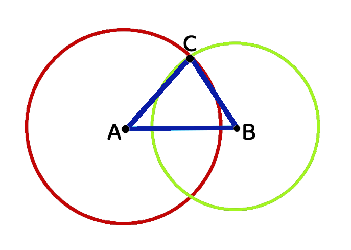

⭕
İki çemberin kesişiminden üçgeneİki çember birbirini kestiğinde iki kesişim noktası oluşur. Çemberlerin merkezlerini ve kesişim noktalarından birini birleştirdiğimizde bir üçgen elde ederiz.

Neden üçgen oluşur? A merkezli çemberin yarıçapı [AC] uzunluğunu, B merkezli çemberin yarıçapı [BC] uzunluğunu belirler. [AB] ise iki merkez arasındaki sabit uzaklıktır. Üç kenarı da belirli olan bu üç doğru parçası bir üçgen oluşturur.
🛠️
İnşa Et — çemberlerin yarıçaplarını değiştir, üçgenin türünü keşfetA ve B merkezli iki çemberin yarıçaplarını kaydırma çubuklarıyla değiştir. Çemberler kesiştiği sürece, kesişim noktası (C) ile birlikte bir üçgen oluşur; oluşan üçgenin türü altta otomatik olarak güncellenir.
Eşkenar üçgen
AB=200, AC=200, BC=200
| Yarıçap durumu | Oluşan üçgen |
|---|---|
| [AC] = [BC] = [AB] | Eşkenar üçgen |
| [AC] = [BC] ≠ [AB] [AC] = [AB] ≠ [BC] [BC] = [AB] ≠ [AC] | İkizkenar üçgen |
| [AC] ≠ [BC] ≠ [AB] (hepsi farklı) | Çeşitkenar üçgen |
| [AC] + [BC] ≤ [AB] |[AC] - [BC]| ≥ [AB] | Üçgen oluşmaz (çemberler kesişmez) |
Genelleme: Üç kenar ile bir üçgen oluşturulabilmesi için, herhangi iki kenarın toplamı üçüncü kenardan büyük olmalıdır. Bu, "üçgen eşitsizliği" olarak bilinir ve kesişen çemberlerin varlığıyla doğrudan ilişkilidir.
📜
Öklid'in izindeKesişen çemberlerden üçgen inşa etme fikri, antik Yunan matematikçisi Öklid'in (Euclid) yaklaşık 2300 yıl önce yazdığı "Elemanlar" (Stoicheia) adlı eserinin ilk önermelerinden birine dayanır. Öklid, yalnızca pergel ve cetvel kullanarak eşkenar bir üçgenin nasıl inşa edilebileceğini göstermiştir.
Bu, matematik tarihinin en eski ve en etkili inşa yöntemlerinden biridir; günümüzde matematik yazılımlarındaki "çember" ve "kesişim noktası" araçları da aynı fikri dijital ortama taşır.
⭕
Çemberlerin yarıçaplarından üçgenin türünü bulA ve B merkezli iki çember birbirini kesiyorsa kesişim noktalarından biri C olsun. |AC| birinci çemberin yarıçapı, |BC| ikinci çemberin yarıçapıdır; |AB| ise merkezler arasındaki uzaklıktır. Çemberler kesişmiyorsa üçgen oluşmaz.
Merkezler arası uzaklığı ve iki yarıçapı yaz.
🎯
Hangi üçgen oluşur?🌸
Çemberlerle süslemeEş çemberlerin merkezleri, komşu çemberlerin kesişim noktalarına yerleştirilirse güzel desenler oluşur. Bu desenlerde her üç komşu merkez bir eşkenar üçgen oluşturur. Logo, çini ve kilim tasarımlarında bu fikirden yararlanılır.
Kaç halka çember çizilsin? (0 ile 3 arası)
Tasarım görevi: Çember, doğru, doğru parçası ve çokgenleri kullanarak özgün bir logo, kitap kapağı ya da kilim deseni tasarla. Görsel Sanatlar dersiyle bağlantılı bu çalışmada araç ya da matematik yazılımı kullanabilirsin.
📚
Çözümlü örneklerÖrnek 1|AB| = 8 cm, yarıçaplar 5 cm ve 5 cm olan iki çember kesişiyorsa oluşan ABC üçgeninin türü nedir?
1
Kenarlar: |AC| = 5, |BC| = 5, |AB| = 8.
2
İki kenar eşit olduğundan üçgen ikizkenardır.
Cevap: İkizkenar üçgen
Örnek 2|AB| = 6 cm ve yarıçaplar 6 cm, 6 cm ise hangi üçgen oluşur?
1
|AC| = |BC| = |AB| = 6.
2
Üç kenar da eşittir.
Cevap: Eşkenar üçgen (Öklid’in ilk önermesindeki inşa)
Örnek 3|AB| = 10 cm, yarıçaplar 3 cm ve 4 cm olan çemberler kesişir mi?
1
Yarıçapların toplamı: 3 + 4 = 7.
2
7 < 10 olduğundan çemberler birbirine ulaşmaz; kesişmezler.
Cevap: Kesişmez, üçgen oluşmaz.
Örnek 4|AB| = 7 cm, yarıçaplar 4 cm ve 6 cm olan çemberlerle oluşan üçgenin türü nedir?
1
Kenarlar: 4, 6 ve 7 cm; hepsi farklıdır.
2
Yarıçaplar toplamı 10 > 7 ve farkları 2 < 7 olduğundan çemberler kesişir.
Cevap: Çeşitkenar üçgen
✏️
Çoktan seçmeliİki çemberin merkezleri arasındaki uzaklık 8 cm; yarıçapları 5 cm ve 5 cm ise oluşan üçgen türü nedir?
✍️
Kısa cevaplıKenar uzunlukları 3 cm, 4 cm, 9 cm olan doğru parçalarıyla üçgen oluşturulabilir mi? (Evet/Hayır)
✅
Doğru mu, yanlış mı?Bir üçgenin kenar uzunluklarından herhangi ikisinin toplamı, üçüncü kenardan büyük olmalıdır.
İki çemberin yarıçapları toplamı, merkezler arası uzaklıktan küçükse çemberler kesişir.
🔗
Eşleştirmer₁ = r₂ = [AB]
r₁ = r₂ ≠ [AB]
r₁ ≠ r₂, ikisi de [AB]'den farklı
🧠
Hızlı özetKesişen çemberler
Merkezler ve bir kesişim noktası üçgen oluşturur.
Üçgen eşitsizliği
İki kenarın toplamı üçüncü kenardan büyük olmalıdır.
Yarıçap = kenar
Her çemberin yarıçapı, üçgenin bir kenar uzunluğuna karşılık gelir.
Öklid
Bu yöntem, "Elemanlar" adlı eserdeki ilk inşa önermelerinden biridir.
🎯
Kendini DeneSoru 1/10 · Puan 0